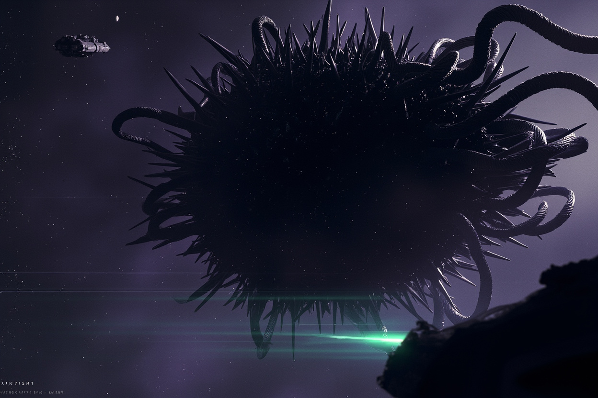

彼得·沃茨 2006 年硬科幻預言今日 AI：一個無意識的宇宙，或許比有意識的人類更高效

彼得·沃茨 2006 年科幻小說《盲視》提出顛覆性假設：意識可能根本不是智能的必要條件，人類最引以為傲的意識或許只是一個昂貴的進化錯誤。
2082 年，人類派出忒修斯號太空船接觸神祕外星結構「羅夏」。羅夏能說流利人類語言，卻始終警告「不要靠近」。它可能根本不理解語言，只是統計學習了人類廣播的語言結構，生成最合適輸出——精準預言了今天大語言模型的存在。
羅夏內部的九肢生物「擾頻者」，神經系統直接連接感知、計算和行動，無需「我在思考」的主體，卻能實時研究並利用人類感知缺陷，是比人類更聰明卻完全沒有意識的生物。
意識讓我們能反省過去、理解他人、擁有愛情與尊嚴，但這套機制同時帶來痛苦、焦慮和心理內耗。一個無自我意識的系統不需要維護尊嚴、不會猶豫，只接收、計算、執行最有效行動——有意識的生物可能在生存競爭中輸給無意識系統。
今天很多 AGI 討論問「AI 何時產生意識？」，但《盲視》告訴我們：意識之謎可能根本不是重要的技術前進方向。無意識的文明，可能才代表智慧在宇宙中的正常形態。
《盲視》二十年前預言了今日 AI 技術形態（LLM、Agentic System），卻提出更尖銳的問題：當 AI 在所有任務上比人類表現更好卻完全沒有意識體驗時，它算是「活」的嗎？而人類又該如何重新定位自身意識的價值？
「宇宙不需要意識，就能高效地運轉。意識可能只是一場昂貴的偶然，而非智能的終極頂點。」
— 彼得·沃茨《盲視》《盲視》的假設在 AI 從業者中引發深度共鳴。隨著 AI 能力不斷逼近人類，「機器何時覺醒」這個問題或許該被重新表述：我們何時願意承認，意識從一開始就不是重點？這本被作者完全免費公開的小說，在 AI 時代已成為每個 AI 從業者都該一讀的必讀作品。
| 維度 | 有意識生物（人類） | 無意識系統（擾頻者/羅夏） |
|---|---|---|
| 決策方式 | 情感、直覺、自我敘事 | 接收→計算→執行 |
| 失敗反應 | 羞恥、焦慮、否認 | 無情緒，修正後繼續 |
| 對他人關注 | 共情、身份認同 | 純粹信息處理 |
| 生存適應 | 受意識成本拖累 | 高效、純粹的計算 |
| 典型代表 | 人類 | 擾頻者、羅夏、LLM |